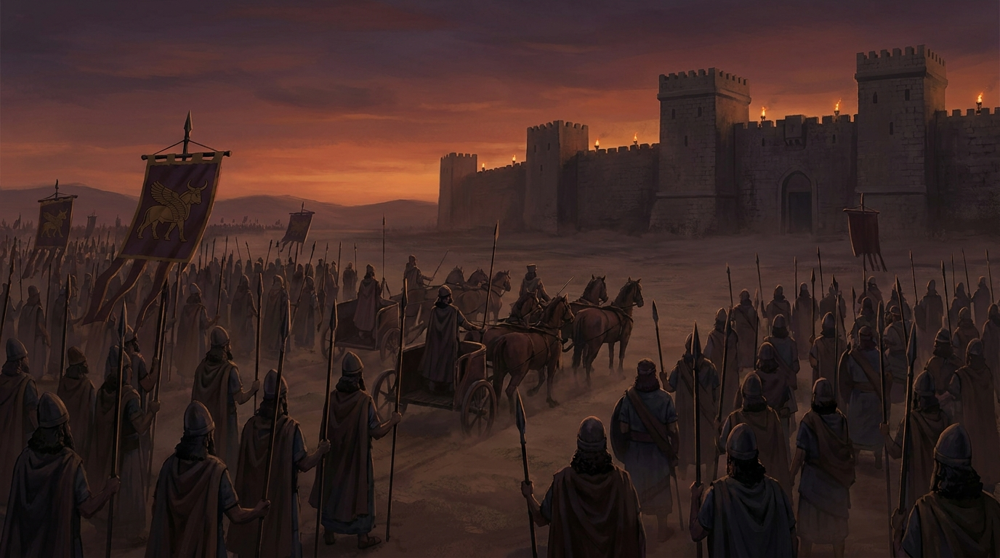
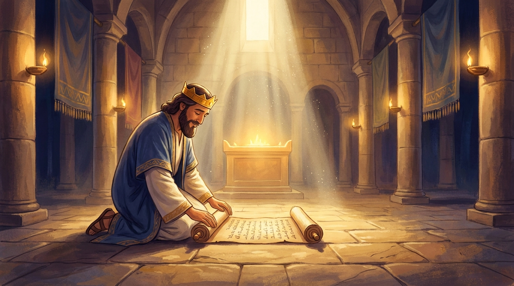
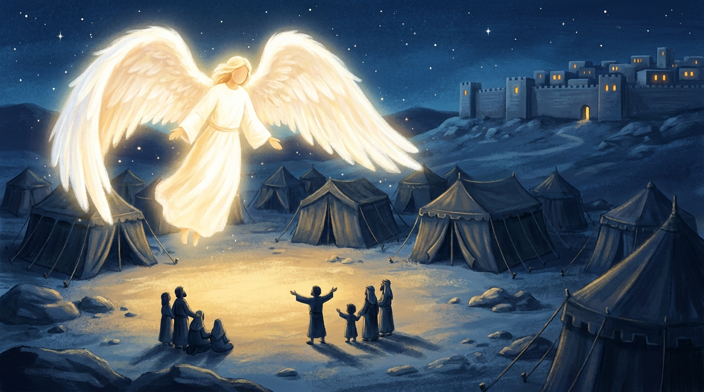
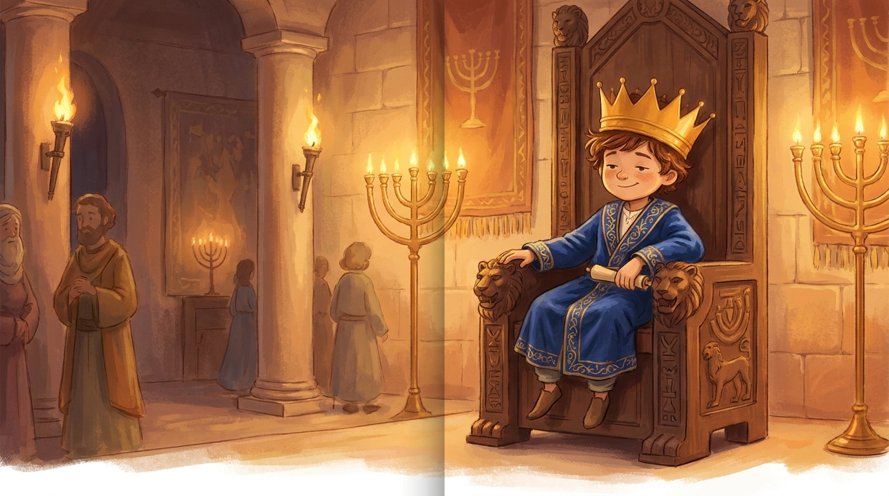
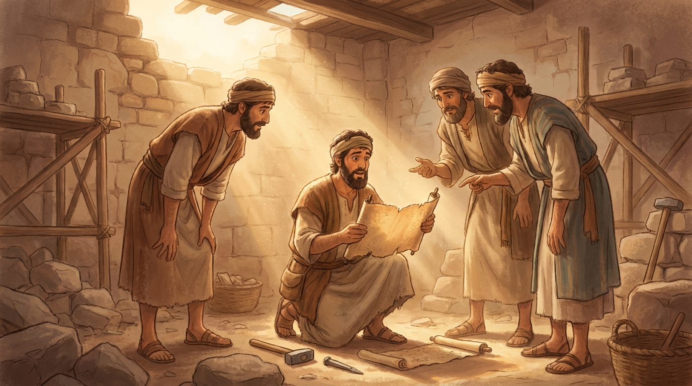
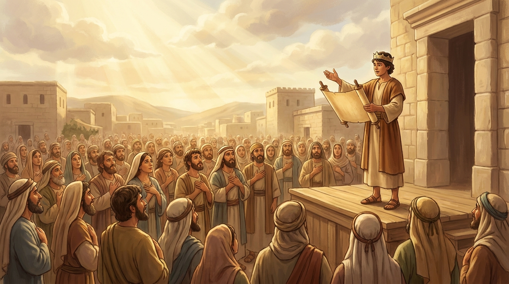

2 Kings 18:5 · "He trusted in the Lord God of Israel; so that after him was none like him among all the kings of Judah."
2 Kings 16-25 · Come Follow Me, July 13-19Primary (9-year-olds), Elk Ridge 15th Ward~35 min
Objective. Meet two good kings of Judah who trusted the Lord. When a giant enemy army and a scary letter came, Hezekiah did not panic; he took the letter straight to God and "spread it before the Lord." And Josiah, who became king when he was only eight years old, found the lost scriptures, and let them turn his whole heart, and his whole kingdom, back to God. The kids should walk out feeling: when I am scared, I can give it to Heavenly Father, and the scriptures turn my heart to Him, so I keep my covenants with all my heart.
↩ Last week / this week
The last two weeks we followed the great prophets Elijah and Elisha, who kept begging Israel to follow God. But did the kings listen? Most of them did not. This week we finally meet two kings who actually trusted the Lord, Hezekiah and Josiah. The prophets pointed the way; these kings walked it.
LeadersMoses
→
thenJoshua
→
thenJudges
→
ProphetsElijah & Elisha
→
TodayKings Hezekiah & Josiah
God keeps sending help. Now we meet kings who trusted Him.
01
The story so far (quick review)
~4 min
Warm-up: Before we meet our two kings, let's see what we remember from the last few weeks. Tap the answer you think is right.
1. Last week, after Elijah went up in the chariot of fire, who became the next prophet?
Elisha! He caught Elijah's fallen cloak (his mantle) and did many miracles. There is always a prophet in Israel.
2. Proud Naaman had to do something that felt way too simple to be healed. What was it?
Wash seven times in the Jordan. The miracle came only after he humbly did the small, simple thing the prophet asked.
3. When Elisha's servant was surrounded and scared, Elisha said, "Fear not: for they that be with us are more than…" what?
"…than they that be with them." God's help was all around, a mountain full of horses and chariots of fire, even when the servant couldn't see it yet.
Bridge into today
The prophets kept pointing Israel to God. But a whole line of kings ignored them and did wicked things. Today we finally meet two kings who listened, and trusted the Lord with everything, even when it was scary.
02
King Hezekiah and the scary letter
~10 min
Hezekiah (say it: hez-uh-KY-uh) was a good king of Judah. The Bible says something amazing about him: "he trusted in the Lord God of Israel; so that after him was none like him among all the kings." He was the best there was at trusting God. Soon he would need every bit of it.
A huge, terrifying army called the Assyrians had already smashed city after city, and now they surrounded Jerusalem. Their king sent Hezekiah a letter, a mean, bragging letter that said: your God cannot save you. Give up.

The mighty Assyrian army surrounds Jerusalem. On the outside, it looked hopeless.
Ask the class
When something scary happens, a mean note, a hard day, a worry that won't go away, what do people usually do with it? (Carry it around. Panic. Hide it.) Watch what Hezekiah does instead.
Hezekiah did not panic and he did not give up. He took the scary letter, walked up to the temple, the house of the Lord, and spread the letter open before God, like he was saying, "Heavenly Father, look. This is too big for me. It's yours now." Tap to open his letter, then give it to the Lord.
Activity · spread it before the Lord
Hezekiah's scary letter
1) Tap the letter to read what the enemy king wrote. 2) Then tap "Take it to the Lord."


✉ From the king of Assyria
Your walls are not strong enough. Your army is too small.
Do not let your God fool you. No god of any land has ever
stopped us. You cannot be saved. Give up your city.
A mean, scary letter. What will Hezekiah do with it?
That very night, the danger was gone. Hezekiah gave his fear to God, and God answered. An angel of the Lord passed through the enemy camp, and by morning the huge army that seemed unbeatable was defeated. Hezekiah didn't win by being the strongest. He won by trusting the Lord.
"And Hezekiah received the letter… and read it: and Hezekiah went up into the house of the Lord, and spread it before the Lord."
🔎 Focus question
Hezekiah "spread the letter before the Lord" instead of carrying the worry alone. What is your way to give a worry to Heavenly Father? (Kneeling prayer, telling Him exactly what scares you, then trusting Him with it.)
🧺 Hands-on object lesson · do this together
"Spread your worry before the Lord"
Let's do exactly what Hezekiah did, with real paper. This is the part the kids will remember all week.
You'll need
A piece of paper or an index card for each child
Pencils, crayons, or markers to share
A picture of Jesus (or the temple) set on a table, or just a clear spot on the table to be our "house of the Lord"
How to run it: Give each child a paper. Have them write or draw one real worry (a hard test, a mean kid, being scared at bedtime, a sick grandparent). Then, one at a time or all together, lay the papers open and flat in front of the picture of Jesus, just like Hezekiah "spread the letter before the Lord." Fold your arms and say a short prayer together giving those worries to Heavenly Father. Point out: we don't have to carry scary things by ourselves, we can give them to God and trust Him.
03
Josiah, the boy king who found the lost scriptures
~11 min
Now meet Josiah (say it: joh-SY-uh). He became the king of a whole country. But guess how old he was when he was crowned king. Take a guess, tap a number.
Activity · guess his age
How old was King Josiah?
Tap the age you think Josiah was when he became king.
Go on, take a guess!
He was only EIGHT years old! That's younger than most of you in this class. A little kid became the king of a whole country, and he chose to do what was right in the sight of the Lord. You are never too young to be good and to trust God.

Josiah became king at eight years old, and "did that which was right in the sight of the Lord."
"Josiah was eight years old when he began to reign… And he did that which was right in the sight of the Lord… and turned not aside to the right hand or to the left."
Here's the sad part: for a long, long time, the people had lost the scriptures. Nobody had read God's word in years, so everyone forgot how to follow Him. Then, while workers were repairing the temple, they discovered something dusty and forgotten tucked away, the lost book of the law. God's word had been there the whole time, just waiting to be found.

Repairing the temple, the workers find the lost book of the law.
Activity · find the lost scriptures
Where is the book of the law hidden?
The scriptures got lost in the temple. Tap around the room to search. Can you find them?
Nothing found yet. Keep looking!
You found it! When Josiah heard God's word read out loud, his heart was changed. Finding the scriptures made all the difference, and we get to find ours every single day.
When they read God's word to young King Josiah, he was so sad the people had forgotten it that he tore his robe. Then he did something wonderful: he gathered everyone, from the biggest to the smallest, read the scriptures out loud to them, and they all made a covenant, a promise, to follow the Lord with all their heart.

Josiah reads the scriptures to everyone; together they covenant to walk after the Lord.
"And the king… made a covenant before the Lord, to walk after the Lord, and to keep his commandments… with all their heart and all their soul…"
🔎 Focus question
Reading the scriptures turned Josiah's whole heart back to God. How do the scriptures help turn our hearts to Heavenly Father and Jesus Christ?
Activity · keep the covenant (stand up and move!)
Josiah's covenant, in three moves
The people promised three things. Do the action with your body, then tap it. (Everybody stand up!)
🧍
Stand to the covenantStand up tall, I choose God.
✓
🚶
Walk after the LordTake a step, I'll follow Him every day.
✓
🫶
With all my heartHand on your heart, I'll keep my promises with all of it.
✓
0 of 3 done. Stand up and let's do them!
That is what a covenant is: a whole-hearted promise between you and God. We stand for Him, walk after Him, and keep our promises with all our heart, just like Josiah's people.
04
Watch: Josiah and the Book of the Law
~4 min
A short animated telling from the Church's Old Testament scripture stories. Tap to play.
▶
Josiah and the Book of the Law
Animated · the Church of Jesus Christ · tap to play
Be like Hezekiah: this week, when something scares or worries you, don't carry it alone. "Spread it before the Lord", tell Heavenly Father in prayer and trust Him with it.
Be like Josiah: you are never too young. Read the scriptures (even a little each day) and let them turn your heart to God. Keep your covenants with all your heart.
Brief testimony: God is worthy of our trust. When we give Him our fears and stay close to His word, He helps us, no matter how young we are or how big the problem looks. Close with prayer.